Smart Mobility for Cities, Companies and Major Projects
Mobility planning, Traffic Simulation and Geo‑intelligence for decision‑makers.
Who is Wagner Jales
I'm Wagner Jales, an Architect/Urban Planner and Transportation Engineer. With over 18 years of experience across public and private sectors, I combine mobility planning, traffic simulation, and geo‑intelligence to turn ideas into viable results. If you need to approve projects, optimize transport or transform urban mobility, I deliver more than reports — I deliver strategic insight.
Solutions Offered
Traffic Impact Report (RIT, EIV)
Accelerate approvals and avoid legal risks in new developments.
Traffic Simulation (PTV Vissim)
Visualize realistic scenarios and make evidence-based decisions.
Advanced Geoprocessing
Mapping and spatial analysis to support strategic projects at urban and regional scales.
Mobility Dashboards
Monitoramento e análise de indicadores para gestão de transporte e território.
Routing Optimization
Otimização e roteirização para o transporte de Cargas e Pessoas (transporte corporativo ou sob regime de fretamento).
Traffic Calming Solutions
Reduce accidents and traffic conflicts with smart, low-cost interventions.
Masterplan
Development of guidelines for land use that integrate urban form, mobility, infrastructure, and the environment.
Regional Mobility
Mobility analysis at the regional scale.
Portfolio
See selected projects
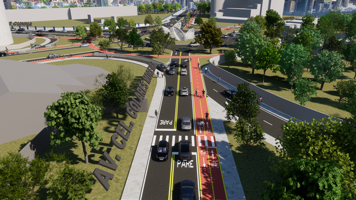
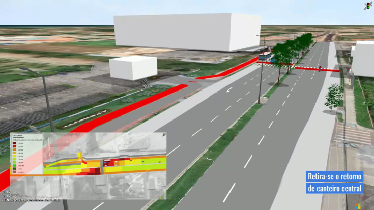
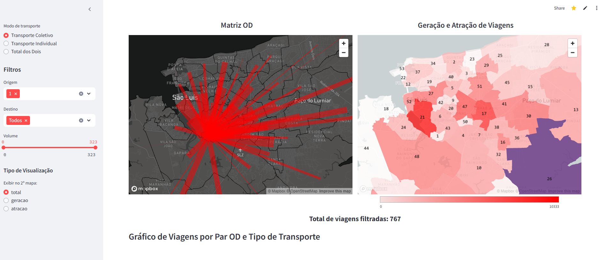
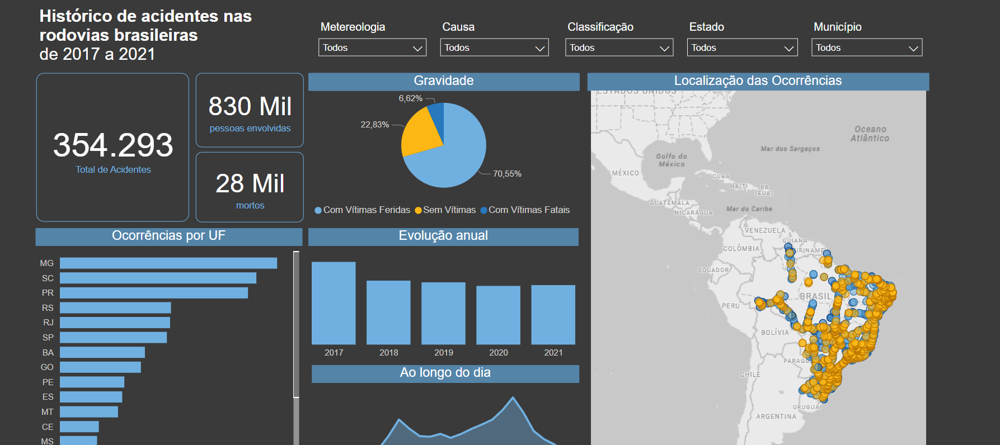
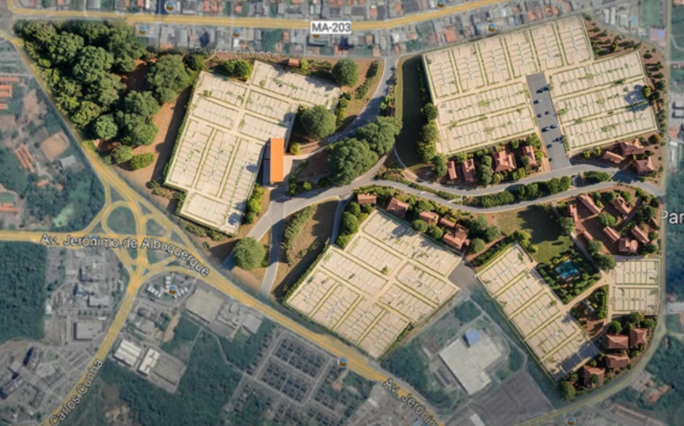
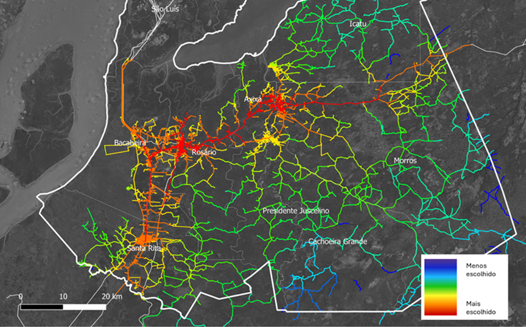
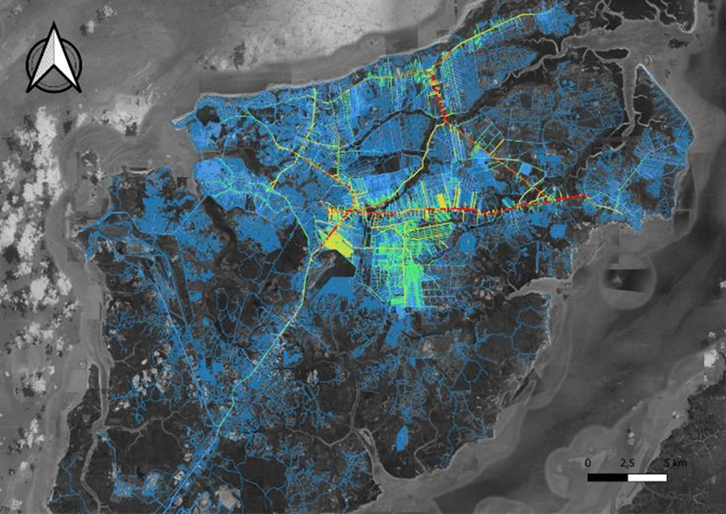
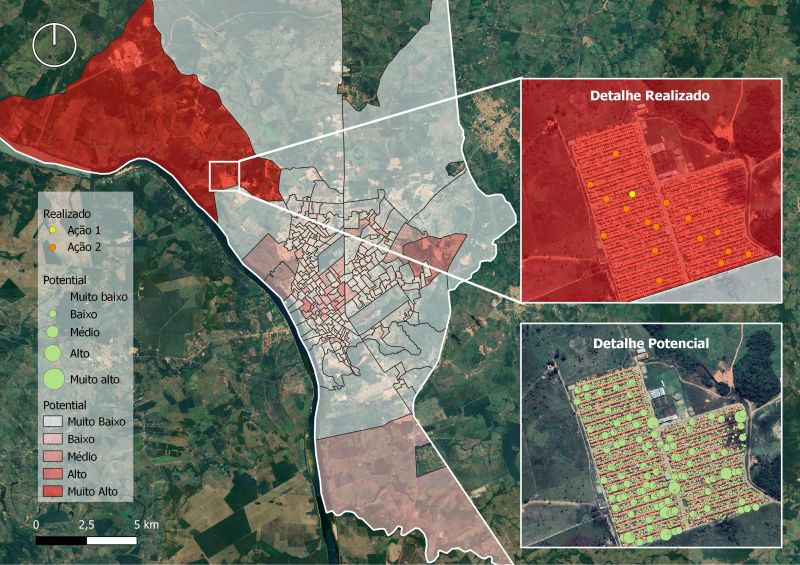
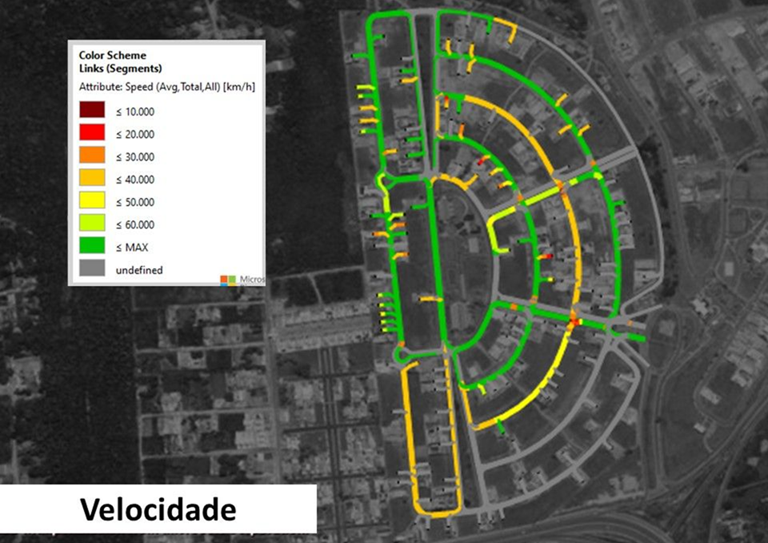
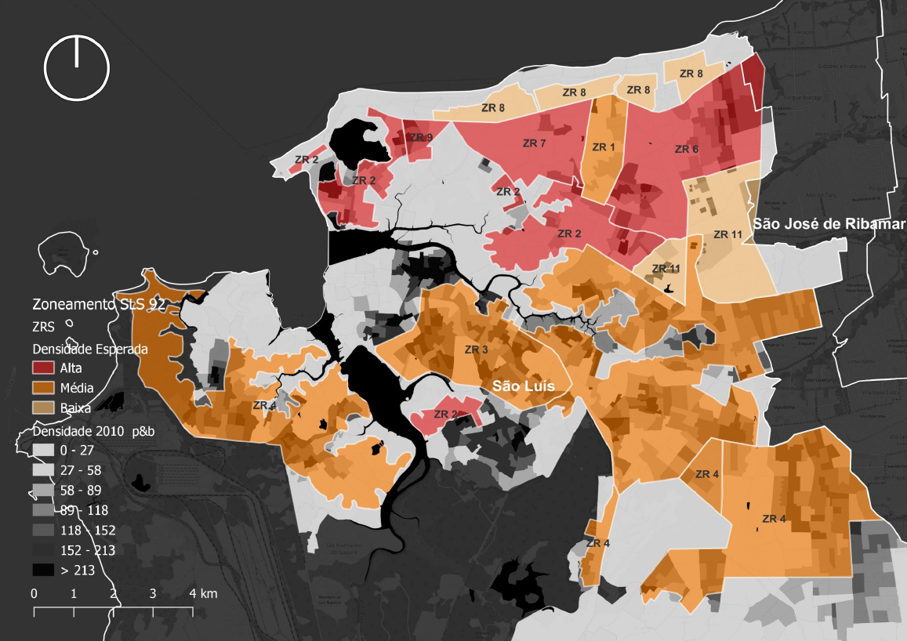
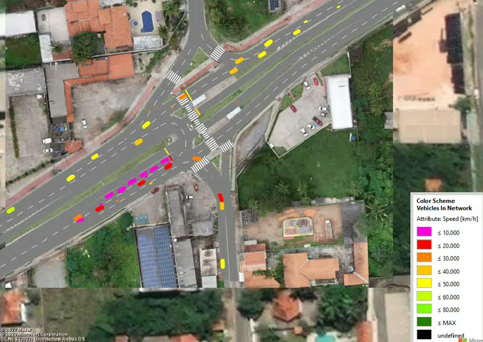
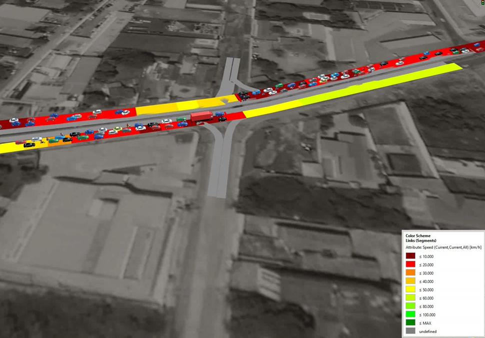
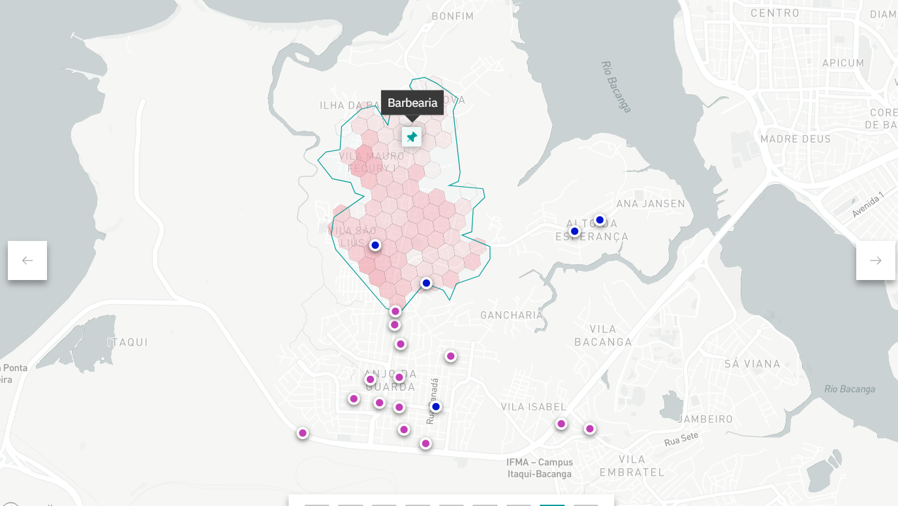
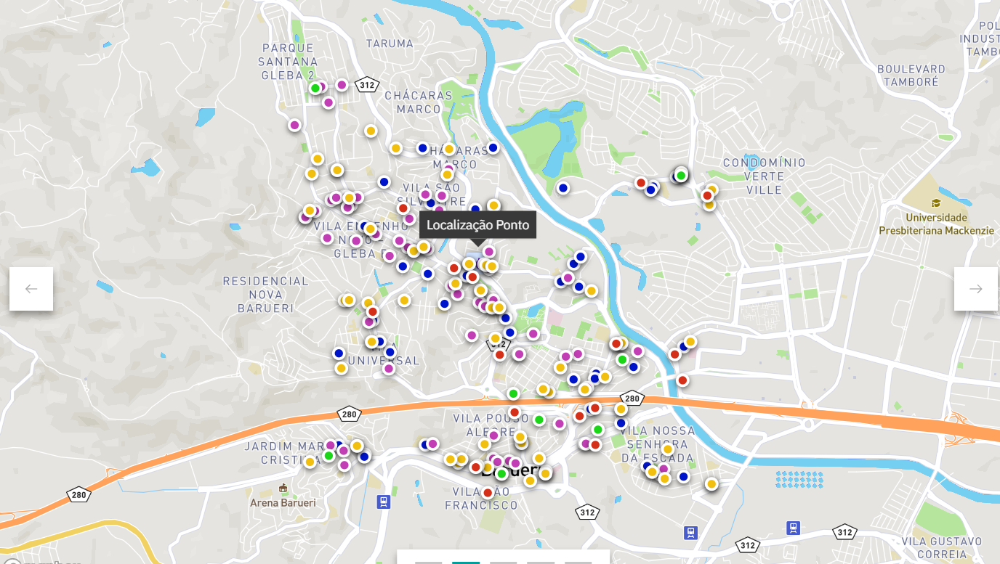
Clients
Trusted by major brands!
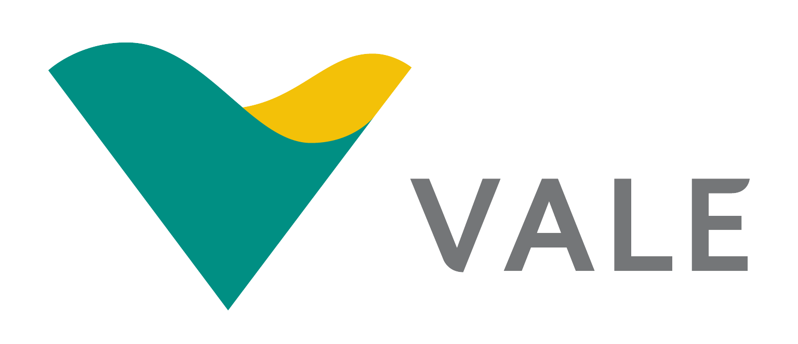
Academic Articles
Research and technical innovation to turn theory into action in urban planning and mobility.
Academic ArticlesBlog
Reflexões e insights sobre mobilidade, urbanismo e tecnologia.
Visit BlogLet's talk?
Ready to bring your project to life or transform your city’s mobility?
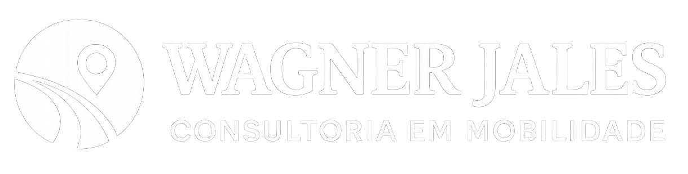